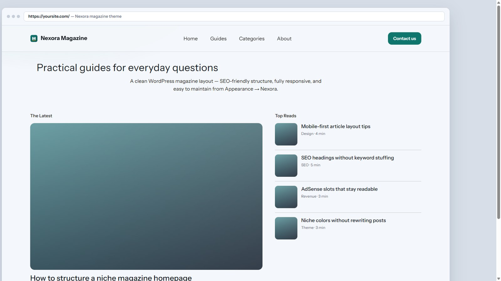
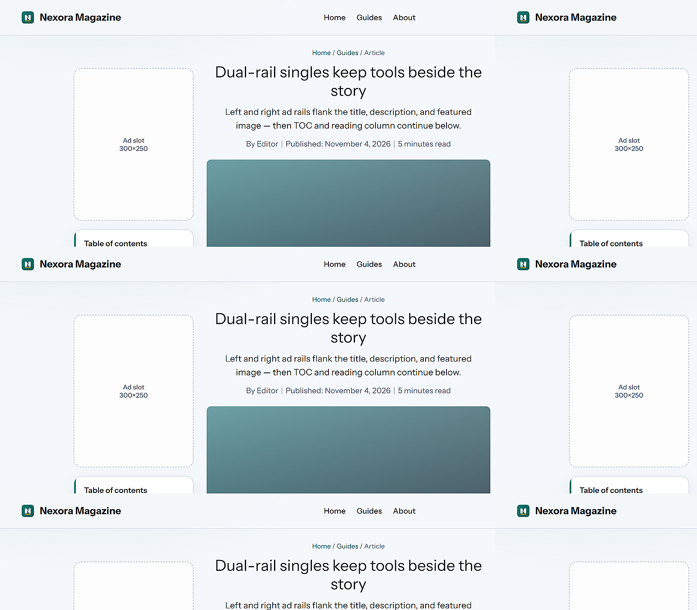
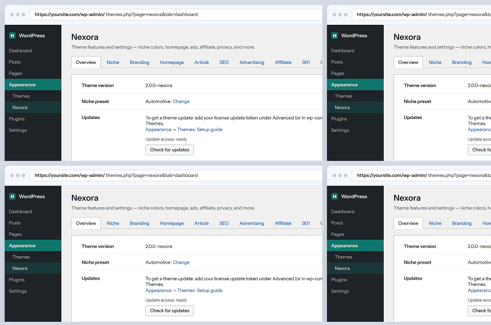

SEO-friendly by design
Clean H1–H3 hierarchy, semantic markup, schema helpers, and Yoast / Rank Math handoff so search engines can understand your magazine.
Free WordPress magazine theme
Launch a clean, SEO-friendly, fully responsive magazine site today. All core features included — easy to install, easy to maintain, built for real publishers.
No page builder · No theme jQuery · Full features · Free forever for the theme package

Nexora is a complete magazine theme — not a locked demo. Get SEO structure, responsive design, revenue tools, and a user-friendly dashboard without paying for a page builder stack.
Clean H1–H3 hierarchy, semantic markup, schema helpers, and Yoast / Rank Math handoff so search engines can understand your magazine.
Mobile-first CSS keeps homepage grids, dual-rail articles, and navigation readable on phones, tablets, and large desktops.
Magazine homepage, AdSense slots, affiliate CTAs, niche color presets, contact form, disclosure footer, and Theme Settings — no upsell wall.
Appearance → Nexora centralizes branding, ads, SEO fields, and updates so you spend time publishing — not hunting settings.
Upload the zip, activate, set Site Identity and menus. Beginners get a clear path; operators get a lean PHP codebase.
Vanilla CSS + a small script. No Elementor bloat, no theme-forced jQuery — better Core Web Vitals potential for content sites.
Trust comes from clarity. Nexora looks premium, stays organized, and puts your Site Identity first — so your brand leads every page.

Editorial layout with Latest, Top Reads, Popular, and category browse — structured for humans and search engines.
AdSense placements and affiliate buttons with disclosure support, so monetization stays policy-aware and visible.
Change the site name, logo, and niche colors anytime. Nexora never hardcodes another publisher’s identity into your install.
A high-authority theme should feel controlled. Nexora’s dashboard keeps niche, branding, ads, affiliate, SEO, and advanced options in one place.

Get the latest nexora-*.zip from GitHub Releases — full theme package, no trial lock.
Appearance → Themes → Upload → Activate. Set your logo, menus, and contact email.
Write posts, switch niche colors if needed, and keep SEO / ads tidy from Appearance → Nexora.
Straight answers for people comparing free WordPress magazine themes.
Yes. Download and use the Nexora theme package at no cost. All listed magazine, SEO, responsive, ads, and affiliate features ship in the theme.
Nexora gives you SEO-friendly foundations: clean titles, semantic HTML, schema helpers, and mobile-responsive layout. Rankings still depend on your content, links, and hosting — the theme removes common template friction.
Yes. If you can install a WordPress theme zip, you can run Nexora. The Theme Settings tabs keep options organized for everyday maintenance.
No. Nexora is a classic lightweight theme. Skip the builder stack if you want a faster, easier-to-maintain magazine.
SEO-friendly. Responsive. Full features. Easy to maintain. Start with Nexora and ship a site that looks intentional from day one.